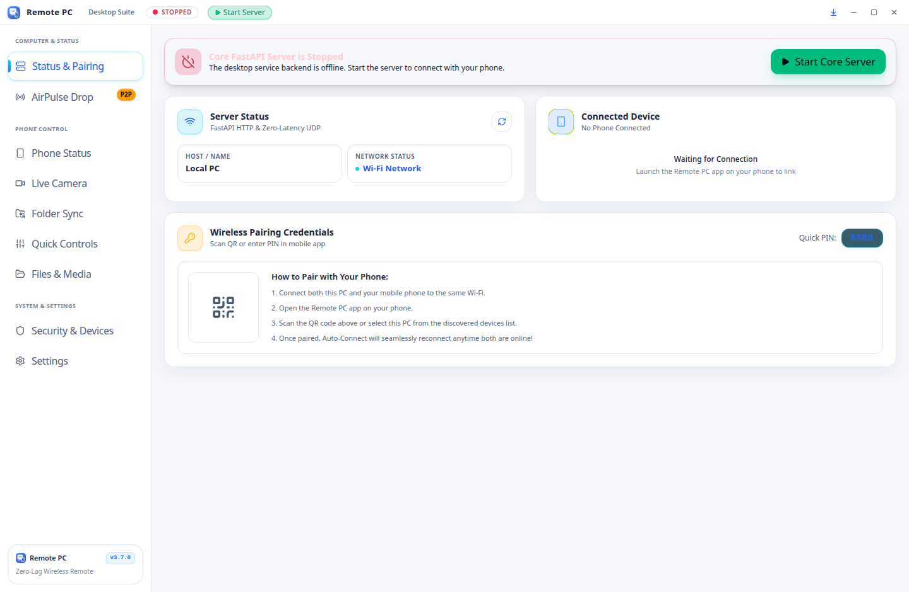
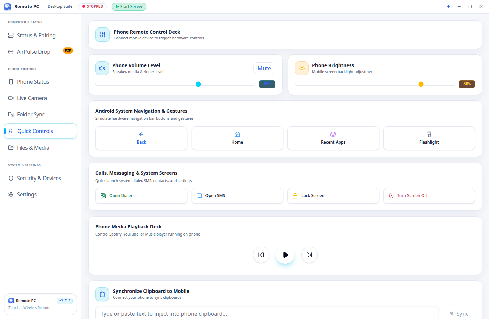
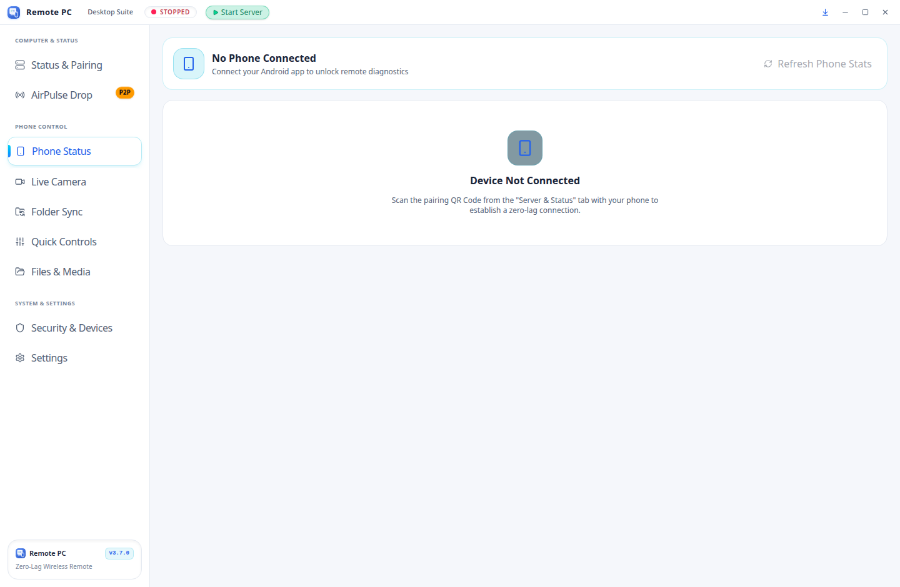
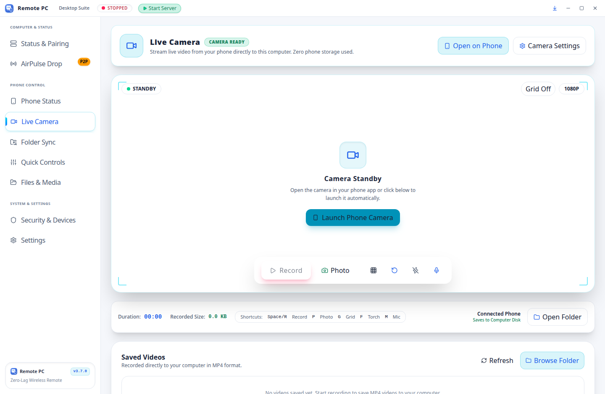
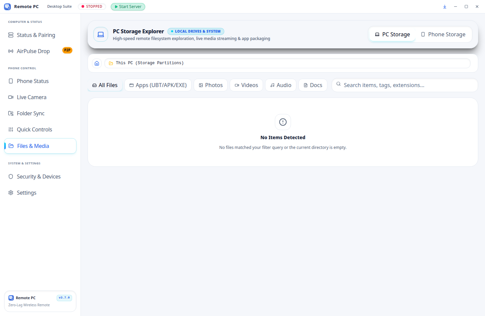
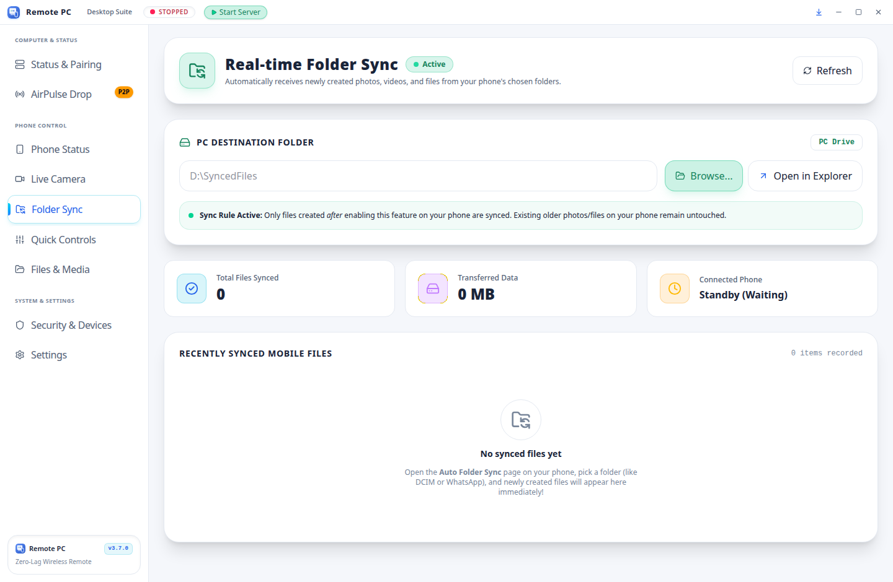
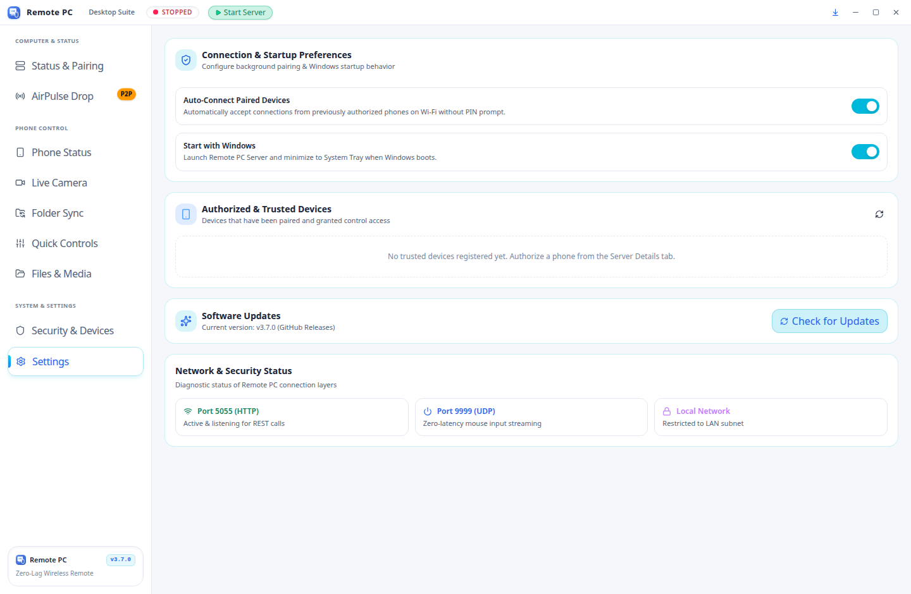
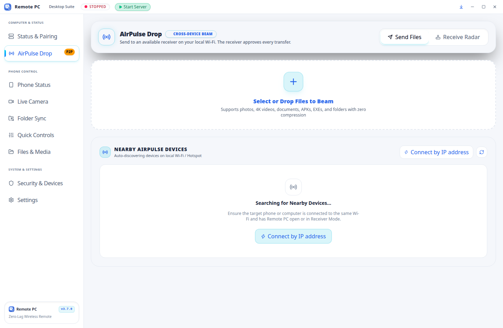

Control your PC from your phone
Adjust volume and brightness, manage media, use a touchpad or send keyboard input without reaching for your desk.
Explore controls →Quick controls● Connected
Volume64%
Brightness82%
◂◂▶▸▸
A simple, secure way to connect your Android phone and computer. Control, share and get things done from wherever you are on your network.

Useful tools for the little moments that make working across devices feel effortless.
Adjust volume and brightness, manage media, use a touchpad or send keyboard input without reaching for your desk.
Explore controls →Browse your phone’s files on your PC, or drop files straight onto your paired phone.
Mirror your Android screen on the desktop and record video from your phone camera.
Pair with a QR code or PIN on the same network. Your connection stays between devices you trust.
See how pairing works →This is a screenshot of Remote PC’s desktop app. The navigation shows the available areas; select a feature below to learn what each one does.
Open any screenshot to view it full size. Each guide shows where to find the feature and the steps to use it.
Link Android with your Windows or Ubuntu PC using your local network, a QR code, or the short pairing code. Approve the pairing on the PC, then remove access later from Security & Devices.
ANDROID · WINDOWS · UBUNTU1. Start Remote PC on the PC. 2. Open Remote PC on Android and choose your PC. 3. Scan the pairing QR or enter its code. 4. Approve the request on the PC.

View screenshot ↗Change phone volume and brightness, control media, navigate Android system actions, and sync clipboard text from the desktop controls panel.
ANDROID · WINDOWS · UBUNTU1. Pair your phone with the PC. 2. Open Quick Controls on desktop or the matching phone control panel. 3. Adjust a slider or tap an action. Your phone applies it while connected.
Use the phone as a trackpad for pointer movement, clicks and scrolling, or open PC Keyboard to type and send shortcuts.
ANDROID1. Connect to the PC in the Android app. 2. Choose Touchpad Trackpad or PC Keyboard from the navigation. 3. Move and tap on the pad, or type and send your text.

View screenshot ↗View and interact with the PC desktop from Android, with live updates while the devices are connected. Android may ask you to approve screen capture before the session begins.
ANDROID · WINDOWS · UBUNTU1. Pair the devices. 2. Open Remote Desktop in Android. 3. Choose the PC display and approve Android’s screen-capture prompt. 4. Use the on-screen controls, then stop the session when finished.

View screenshot ↗Preview the Android camera from desktop and record a clip directly to the PC. Camera and microphone permissions are requested by Android when needed.
ANDROID · WINDOWS · UBUNTU1. Pair the phone and PC. 2. Open Live Camera on desktop or Direct Camera Record on Android. 3. Approve camera/microphone access. 4. Start and stop recording from the desktop controls.

View screenshot ↗Browse PC folders and phone media, search and filter items, then save selected files to the other device.
ANDROID · WINDOWS · UBUNTU1. Open Files & Media on desktop. 2. Choose PC Storage or Phone Storage. 3. Browse or search, select an item, and choose the send/save action.

View screenshot ↗Choose a PC folder and phone folder to keep selected files synchronized. Review the current sync state and transfer history from either device.
ANDROID · WINDOWS · UBUNTU1. Open Folder Sync. 2. Choose the source and destination folders. 3. Review the sync options and enable sync. 4. Keep Remote PC running on both devices while it transfers.
See whether the desktop service is online, whether the phone is connected, the pairing code, and available system details.
WINDOWS · UBUNTU1. Open Status & Pairing on desktop. 2. Start the server if it is stopped. 3. Pair the phone to see its connection status. 4. Use the refresh control to request an updated status.

View screenshot ↗Keep the Android connection available in the background with the app’s background service, notification, boot restoration, and quick settings controls. Android battery settings can limit background work.
ANDROID1. Open Settings in Android Remote PC. 2. Enable the background connection option. 3. Allow its persistent notification and boot-start permission if Android asks. 4. If it disconnects, allow background battery use in Android system settings.

View screenshot ↗Nearby transfers let a sender select files and request a receiver. The receiver must turn Receiver mode on and accept each request before data moves. Both devices show live progress and speed, and either side can cancel. Up to four files transfer concurrently.
ANDROID · WINDOWS · UBUNTU1. Receiver selects Receiver mode to become discoverable. 2. Sender selects files, then chooses a nearby receiver or enters its local IP address. 3. Receiver reviews the sender, file list, and total size, then accepts. 4. Both sides show live progress and speed; either side can cancel.
Screenshots are captured from the Remote PC desktop app. Phone-only views are represented by the related desktop control screen where available. Nearby transfers require both devices to be on the same local network, with Receiver mode enabled on the receiving device.
Remote PC works over your local network. Install the desktop companion on your PC and the Android app on your phone, then pair the devices.
Choose the package for your computer. Open Remote PC and start its local server from the title bar if it is stopped. Keep the desktop app running while using phone features.
Install the APK, open Remote PC, and connect both devices to the same Wi-Fi network. Select the PC that appears or scan the pairing QR. Enter the short code if you choose manual pairing, then approve the request on desktop.
Use the Android navigation to open Touchpad, Keyboard, Remote Desktop, Camera Record, Folder Sync, or AirPulse. The desktop sidebar has matching screens for controls, camera, sync, files, security, and status.
Follow the per-feature “How to use” steps in The Remote PC Toolkit. Android will request screen-capture, camera, microphone, notification, or background permissions only when a feature needs them.
Turn on Receiver mode on the device that should receive files. The sender picks files and selects that device. Check the file list and accept the request on the receiver. Wait for the progress to finish before closing either app. AirPulse is currently being updated.
Free to use. Get the desktop app for your computer and the companion app for Android.
Downloads are served from GitHub Releases. Review source code and release notes there.